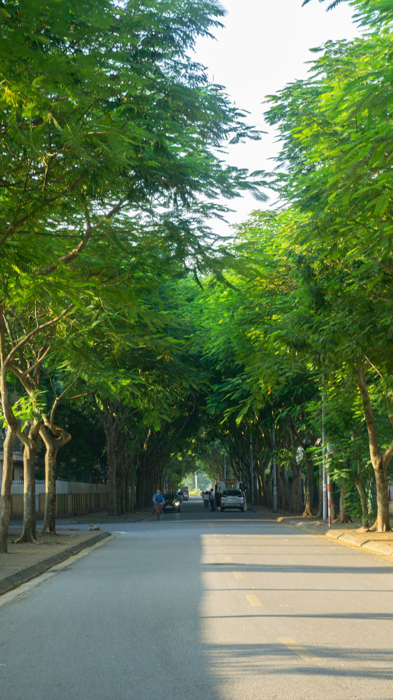

Green Street WalkGreen Street Walk
Một buổi đi bộ quan sát bóng mát, ghế nghỉ, điểm nóng nhiệt và các khoảng xanh vi mô trên một tuyến phố cụ thể.A short walk to observe shade, pause points, heat stress, and micro-green spots along a specific route.